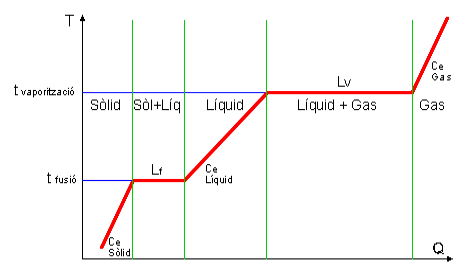
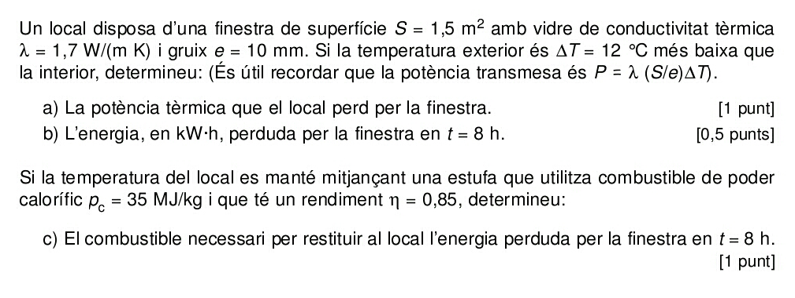
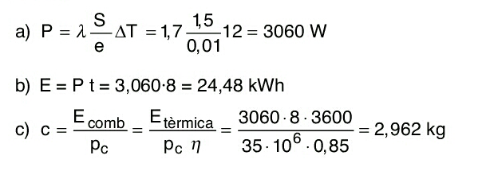
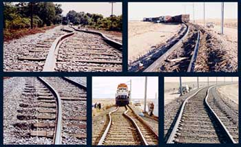
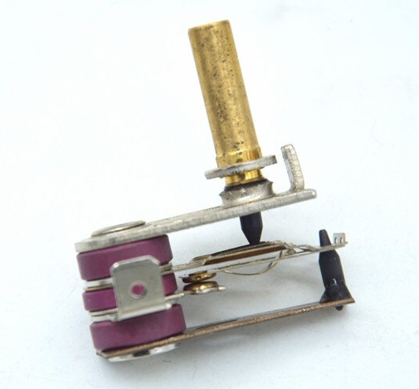
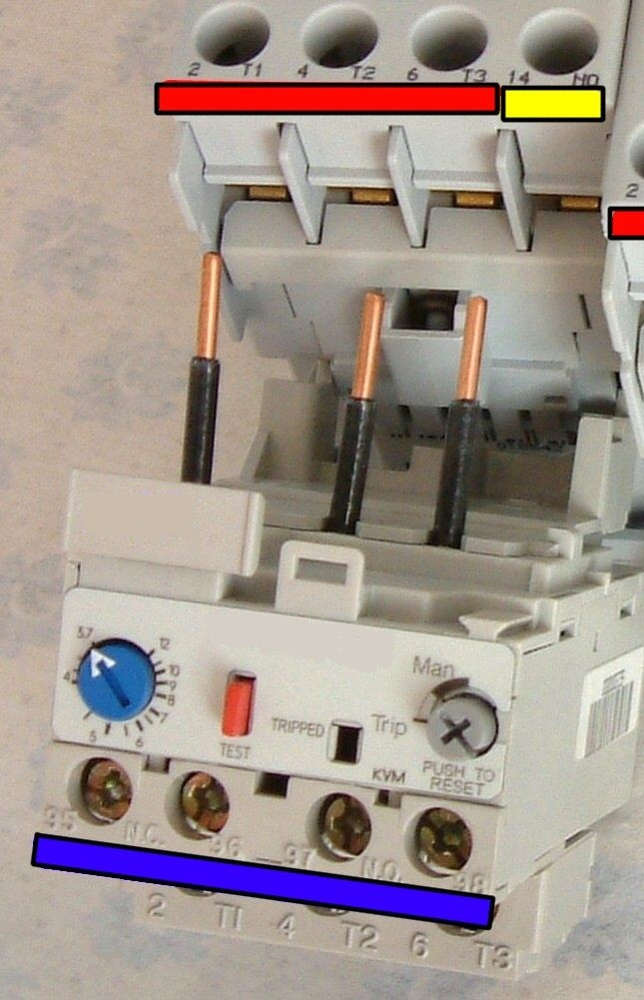
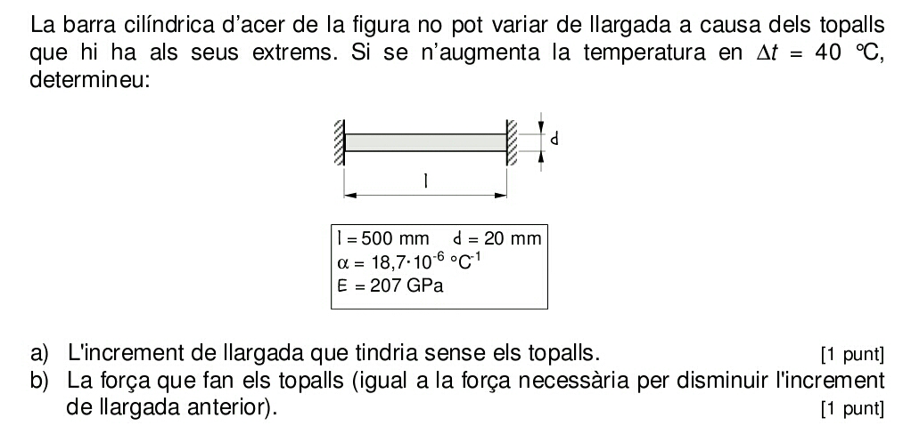
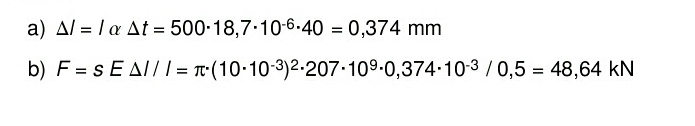

Propietats tèrmiques#
Pàgina en desenvolupament
Encara estem treballant en aquest document.
Esperem oferir-vos properament el seu contingut.
Disculpeu les molèsties.
Calor latent. Calor específica.#
Si escalfem una substància pura podem observar un gràfic com el de la figura. Dintre d’un mateix estat observem que
\(Q = m\cdot c_e \cdot \Delta T\)
on \(c_e\) és la calor específica, que correspon a la pendent d’escalfament.
Quan la substància canvia d’estat veiem que
\(Q = m \cdot L_i\)
on \(L_i\) és el calor latent de fusió (\(L_f\)) o de vaporització (\(L_v\)), segons el canvi d’estat.
Veiem la gràfica [IOC24] amb tots els processos implicats:

Conductibilitat tèrmica#
El flux de calor a través d’una placa de superfície \(S\) i gruix \(e\) depèn de la diferència de temperatures entre els costats de la placa i del material d’aquesta segons la llei de Fourier:
\(\dot{Q} = \large \lambda \frac{S}{e}\Delta T\)
on \(\lambda\) és la conductibilitat tèrmica del material.
Cal destacar que les interfícies sòlid/gas tenen resistències tèrmiques molt elevades. El poliestirè té \(\lambda = 0,13 \ W \ m^{-1} °C^{-1}\), però el poliestirè expandit té \(\lambda = 0,037 \ W \ m^{-1} °C^{-1}\) .
A la pràctica es fa una analogia amb la llei d’Ohm per fer càlculs d’aïllament tèrmic amb diferents superfícies, materials i gruixos. \(\Delta T\) seria l’equivalent a la tensió, \(\large { (\lambda \frac{S}{e})}^{-1}\) a la resistència i \(\dot{Q}\) a la intensitat. D’aquesta manera podem utilitzar les mateixes expressions d’associacions de resistències (sèrie, paral·lel, mixt) en aquestes càlculs.
Exemples#
PAU 2001 S4 3B#
 
Dilatació tèrmica#
Els cossos s’expandeixen amb la calor. Un bon exemple el trobem a les vies del ferrocarril, on els raïls són molt llargs i si no es prenen precaucions poden deformar-se a l’estiu, provocant accidents.

Altres exemples de situacions en que cal tenir en compte les dilatacions en el disseny són les cobertes de terrats, els ponts i altres edificis i construccions llargs que pateixen canvis de temperatura entre hivern i estiu.
Si treballem amb una dimensió veurem que una longitud L0 experimenta un increment proporcional a L0 i a l’increment de temperatura i que depèn del material:
\(\Delta L = \alpha \ L_0 \ \Delta T\)
on α és el coeficient de dilatació lineal del material. La nova longitud serà \(L=L_0 \ (1+\alpha \ \Delta T)\)
Per a superfícies:
\(S = S_0 \ (1+\beta \ \Delta T)\) amb \(\beta = 2 \ \alpha\)
i per a volums:
\(V = V_0 \ (1+\gamma \ \Delta T)\) amb \(\gamma = 3 \ \alpha\)
Per evitar aquestes deformacions i trencaments abans senyalats s’utilitzen juntes de dilatació com la de la imatge, que permeten dilatacions i eviten aquests problemes.

Per altre banda la dilatació és el principi de funcionament dels termòmetres de mercuri o dels termòstats, controls intermitents i vàlvules basades en bimetalls.

Un bimetall és una peça composta per dos làmines de metalls diferents unides. Com els dois metalls tenen diferent coeficient de dilatació la peça es corba amb l’increment de temperatura. Si aquesta curvatura provoca l’obertura d’un circuit elèctric (com la peça és metàl·lica és conductora) tindrem un termòstat, com els utilitzats a planxes i estufes elèctriques.

Els relés tèrmics, sistemes de protecció contra sobrecàrregues febles i perllongades pels motors elèctrics, també utilitzen bimetalls en el seu funcionament.

Exemples#
PAU 2000 S6 4A#
 